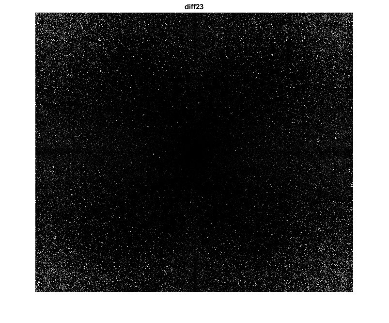
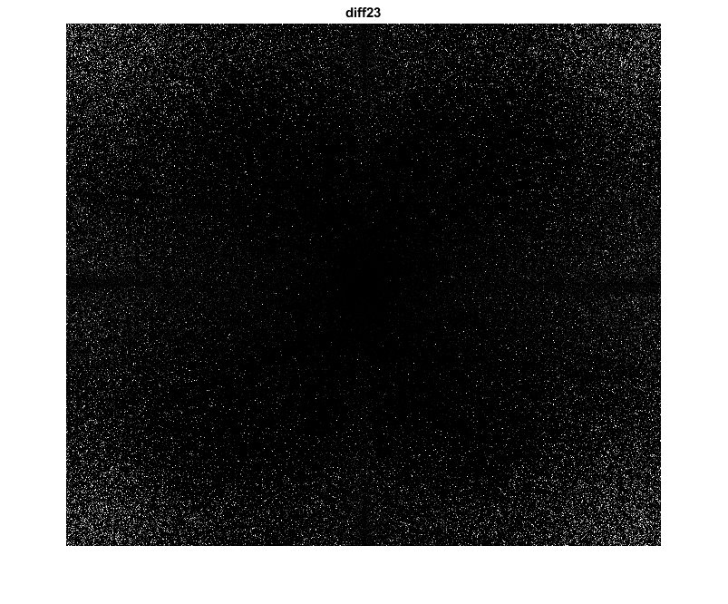
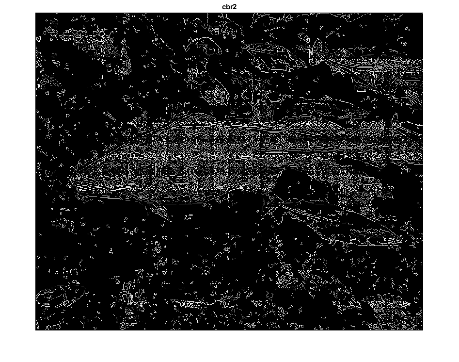
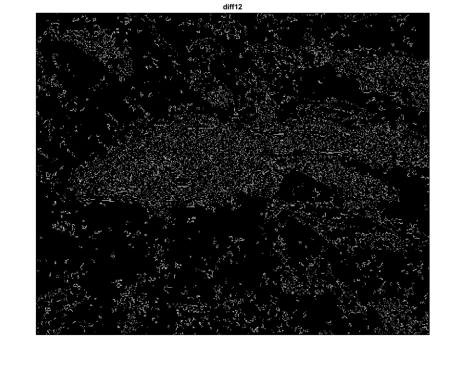
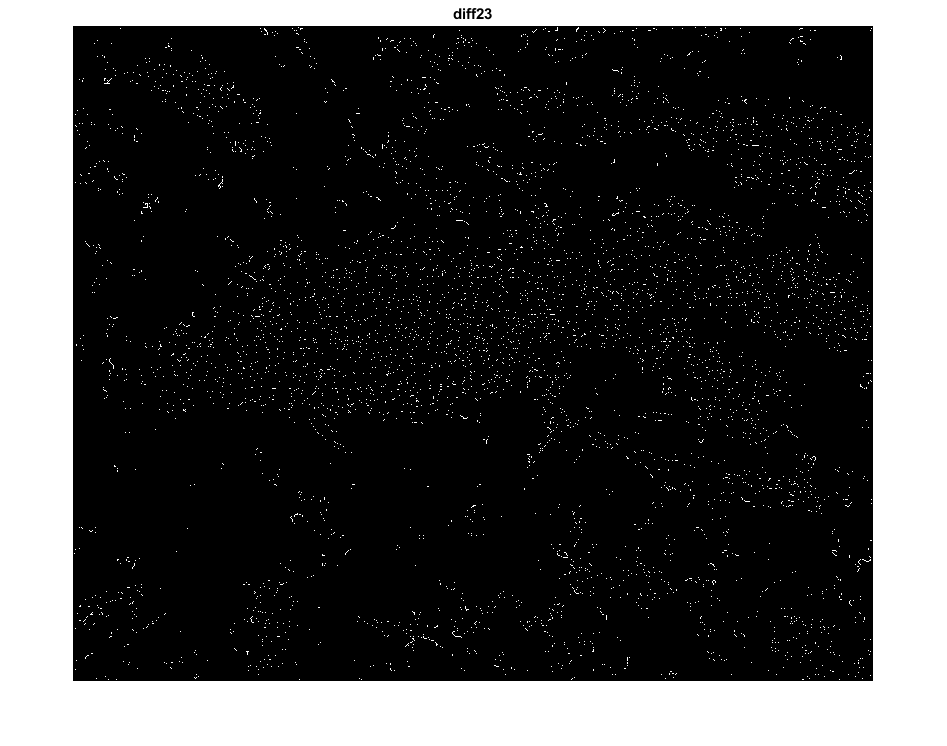

Contents
% Author: Abdallah S. Abdallah aua639@psu.edu % SamplingDemo_Incomplete - Version: 0.1 clear; clc; close all; % closes all figures
Setup
read images and convert to floating point format
dog = imread('./data/dog.bmp'); cat = imread('./data/cat.bmp'); bird = imread('./data/bird.bmp'); fish = imread('./data/fish.bmp'); image1double = double (dog)/255; image2double = double (cat)/255; image3double = double (bird)/255; image4double = double (fish)/255; dog_gray = rgb2gray(dog); cat_gray = rgb2gray(cat); bird_gray = rgb2gray(bird); fish_gray = rgb2gray(fish); % figure;imshowpair(image1_gray, image2_gray, 'montage'); out1 = zeros(floor(size(dog_gray,1)/2), floor(size(dog_gray,2)/2)); % Down sampling by a factor of two out1 = dog_gray(1:2:end, 1:2:end); figure;imshow(out1);
alternative downsample method.
out11 = imresize(dog_gray,0.5); figure;imshow(out11);
Class Sampling Lab1
Create an Upsampler with a factor of two using the imresize function
scale =2; fontSize = 10; B = imresize(dog_gray,scale); figure; imshow(B); title('Upsampler by factor of 2', 'FontSize', fontSize, 'Interpreter', 'None');
Implement Sampling Lab2
numrows = 720; numcols = 820; cat_rs = imresize(cat_gray,[numrows/2 numcols/2]); dog_rs = imresize(dog_gray,[numrows/2 numcols/2]); fish_rs = imresize(fish_gray,[numrows/2 numcols/2]); bird_rs = imresize(bird_gray,[numrows/2 numcols/2]); newimg = [cat_rs bird_rs ;fish_rs dog_rs]; figure; imshow(newimg)
method = "nearest"; cat_rs_1 = imresize(cat_gray,[numrows/2 numcols/2],method); dog_rs_1 = imresize(dog_gray,[numrows/2 numcols/2],method); fish_rs_1 = imresize(fish_gray,[numrows/2 numcols/2],method); bird_rs_1 = imresize(bird_gray,[numrows/2 numcols/2],method); newimg_1 = [cat_rs_1 bird_rs_1 ;fish_rs_1 dog_rs_1]; method = "bilinear"; cat_rs_2 = imresize(cat_gray,[numrows/2 numcols/2],method); dog_rs_2 = imresize(dog_gray,[numrows/2 numcols/2],method); fish_rs_2 = imresize(fish_gray,[numrows/2 numcols/2],method); bird_rs_2 = imresize(bird_gray,[numrows/2 numcols/2],method); newimg_2 = [cat_rs_2 bird_rs_2 ;fish_rs_2 dog_rs_2]; method = "bicubic"; cat_rs_3 = imresize(cat_gray,[numrows/2 numcols/2],method); dog_rs_3 = imresize(dog_gray,[numrows/2 numcols/2],method); fish_rs_3 = imresize(fish_gray,[numrows/2 numcols/2],method); bird_rs_3 = imresize(bird_gray,[numrows/2 numcols/2],method); newimg_3 = [cat_rs_3 bird_rs_3 ;fish_rs_3 dog_rs_3]; figure; % subplot(1,3,1); imshow(newimg_1); figure; % subplot(1,3,2); imshow(newimg_2); figure; % subplot(1,3,3); imshow(newimg_3);
Represent in Frequency domain
ni_1_fft = fft2(newimg_1); ni_2_fft = fft2(newimg_2); ni_3_fft = fft2(newimg_3); % figure; % subplot(1,3,1); % displayFFT(ni_1_fft); % subplot(1,3,2); % % displayFFT(ni_2_fft); % subplot(1,3,3); % % displayFFT(ni_3_fft); diff12 = fftshift(log(1+abs(ni_1_fft)))- fftshift(log(1+abs(ni_2_fft))); diff13 = fftshift(log(1+abs(ni_1_fft)))- fftshift(log(1+abs(ni_3_fft))); diff23 = fftshift(log(1+abs(ni_2_fft)))- fftshift(log(1+abs(ni_3_fft))); figure; imshow(diff12); % displayFFT(diff12); title('diff12'); figure; imshow(diff13); title('diff13'); figure; imshow(diff23); title('diff23');
 
 Representing in color
First diff
XX = (uint8(diff12)); % Compute the thresholds thresh = multithresh(XX,2); % Apply the thresholds to obtain segmented image seg_I = imquantize(XX,thresh); % Show the various segments in the segmented image in color RGB = label2rgb(seg_I); figure, imshow(RGB);colorbar; title('dif13'); % %% Second Diff XX = (uint8(diff12)); % Compute the thresholds thresh = multithresh(XX,2); % Apply the thresholds to obtain segmented image seg_I = imquantize(XX,thresh); % Show the various segments in the segmented image in color RGB = label2rgb(seg_I); figure, imshow(RGB);colorbar; title('dif13'); % Third Diff XX = (uint8(diff12)); % Compute the thresholds thresh = multithresh(XX,2); % Apply the thresholds to obtain segmented image seg_I = imquantize(XX,thresh); % Show the various segments in the segmented image in color RGB = label2rgb(seg_I); figure, imshow(RGB);colorbar; title('dif23');

Implement Sampling Lab3
br1 = imresize(fish_gray,4,'nearest'); cbr1 = edge(br1, 'canny'); br2 = imresize(fish_gray,4,'bilinear'); cbr2 = edge(br2, 'canny'); br3 = imresize(fish_gray,4,'bicubic'); cbr3 = edge(br3, 'canny'); figure; imshow(cbr1); title('cbr1'); figure; imshow(cbr1); title('cbr2'); figure; imshow(cbr1); title('cbr3'); figure; imshow(cbr1 -cbr2); title('diff12'); figure; imshow(cbr1 -cbr3); title('diff13'); figure; imshow(cbr2 -cbr3); title('diff23');
Warning: Image is too big to fit on screen; displaying at 67% Warning: Image is too big to fit on screen; displaying at 67% Warning: Image is too big to fit on screen; displaying at 67% Warning: Image is too big to fit on screen; displaying at 67% Warning: Image is too big to fit on screen; displaying at 67% Warning: Image is too big to fit on screen; displaying at 67%  